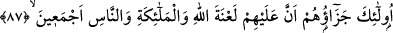
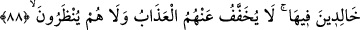

“Allah, zâlim toplumu doğru yola iletmez.” Âyetlere bakmayıp, küfrü îman yerine
koyarak nefislerine zulmedenleri kastediyor. Bunlar böyle olduğuna göre, kendilerine
hak geldikten sonra onu kavrayıp sonra da yüz çevirenlerin hâli nasıl olur?
Eğer denilirse ki; zâhiri itibariyle, âyet müslüman olduktan sonra küfre dönen ve
kendine zulmeden hiç kimseyi Allah’ın hidâyete erdirmeyeceğini ifade ediyor. Halbuki
biz, Allah’ın hidâyete iletmesiyle müslüman olan bir sürü mürted tanıyoruz. Bir sürü de
zâlim tanıyoruz ki zulümlerinden tevbe ediyorlar? Bunun cevabı şu şekildedir: Bu âyetin
mânası, bunlar kâfir olarak yaşamayı ve küfürde ısrar etmeyi arzu ettikleri ve İslâm’a
yönelmedikleri müddetçe Allah bunları hak yola iletmez. Ama, hak dînin doğruluğunu
ve ortaya konmuş delilleri görerek hidâyete erme yollarını ararlarsa bu takdirde Allah,
bunlarda hidâyete erme temâyülü yaratarak bunları hak yola iletir.
87. İşte onların cezası, Allah’ın, meleklerin ve bütün insanlığın lânetine
uğramalarıdır.
İşte yukarıda geçen kötü sıfatlara sahip olmaları itibâriyle zikredilen bu şahısların
cezası: Allah’ın lânetinin -ki o cennetten uzaklaştırıp cezaya ve azaba dûçâr etmesidir-
meleklerin lânetinin -insanlarınki gibi sözlü bir lânettir- ve bütün insanların lânetinin
onlar üzerine olmasıdır. Buradaki insanlardan maksat, mü’minlerdir. Çünkü tüm
insanlar kastedilmiş olsa idi; kişinin kendisine muhâlif-muvâfık herkese lânet etmesi
gerekirdi ki, insanın kendisine muvâfık olanlara lânet etmesinin tutar tarafı yoktur. Fakat
şöyle düşünülürse, buradaki insanlardan tüm insanların kastedildiğine ihtimal
verilebilir: Herkes bâtılı savunanlara, hakkı gizleyenlere lânet eder, ama bunu yaparken
hadd-i zâtında kendisinin bâtıl ehli ve kâfir olmadığına da inanır. O takdirde, kâfir,
Allah’ın ilminde kâfir olduğu için her ne kadar bunu kendisi bilmiyorsa da lânet
ettiğinde kendine lânet etmiş olur.
88. Bu lânete ebedî gömülüp gidecekler. Onların azapları hafifletilmez; yüzlerine
de bakılmaz.
“Lânette sürekli kalma”nın mânası; kıyâmet günü, meleklerin, mü’minlerin ve
cehennemde kendi yanlarında bulunanların devamlı lânet etmeleri ve hiçbir halde
lânetten en ufak bir süre bile kurtulamayacak olmalarıdır.
“Onlardan azap hafifletilmeyecek ve onlara aslâ mühlet de verilmeyecektir.” Yani